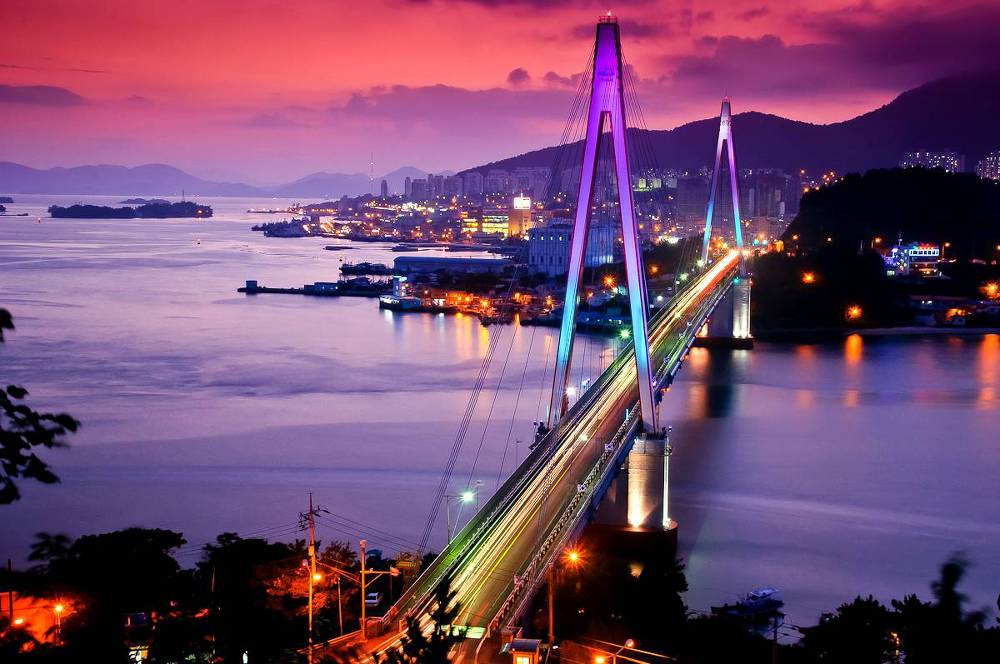

버스커 버스커 (Busker Busker) - 여수 밤바다
여수시는 대한민국 전라남도 동남부 여수반도에 있으며 365개의 부속 섬을 가진 해안도시이다.
여수시에 있는 여수엑스포역은 2012년 세계 박람회에 맞춰 여수역에서 개명한 이름으로
전라선의 종착역이며, 대한민국의 철도역사 중 최남단에 위치한 역이다. 여행을 좋아한다면 힌번쯤은 전라선을 타고 가는 기차여행을 계획해볼 수도 있을 것이다.
이순신 장군의 전적지로 거북선을 만든 선소가 발견되는 등 이와 관련된 여러 유적과 무용담이 전설처럼 내려오기도 하는 지역이며
모래사장과 자연환경 덕분에 관광지로 유명한 지역이기도 하니
여수의 낮바다와 밤바다 전부 합쳐 200프로의 즐거움을 느껴보자.
어디로 갈까?
#충무공
#오동도 #방죽포해수욕장 #한려해상국립공원 #여수만
#돌산대교 #진남관 #흥국사
